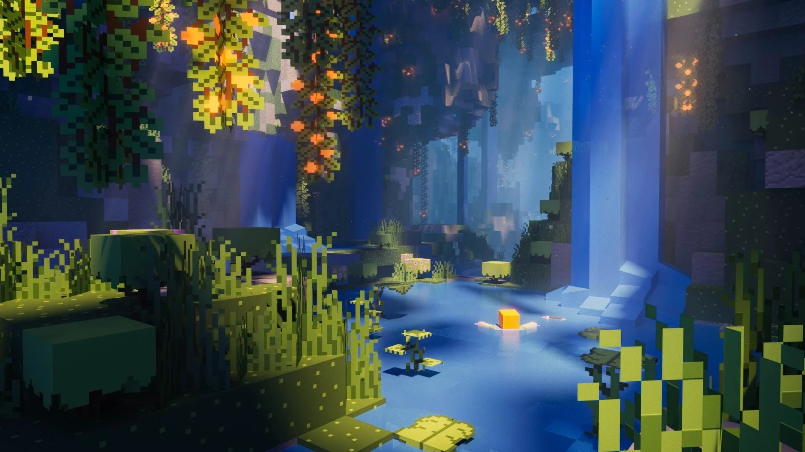
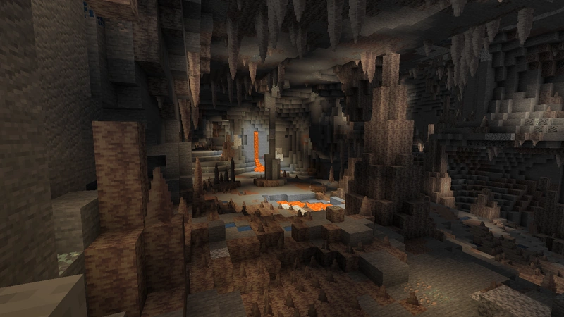
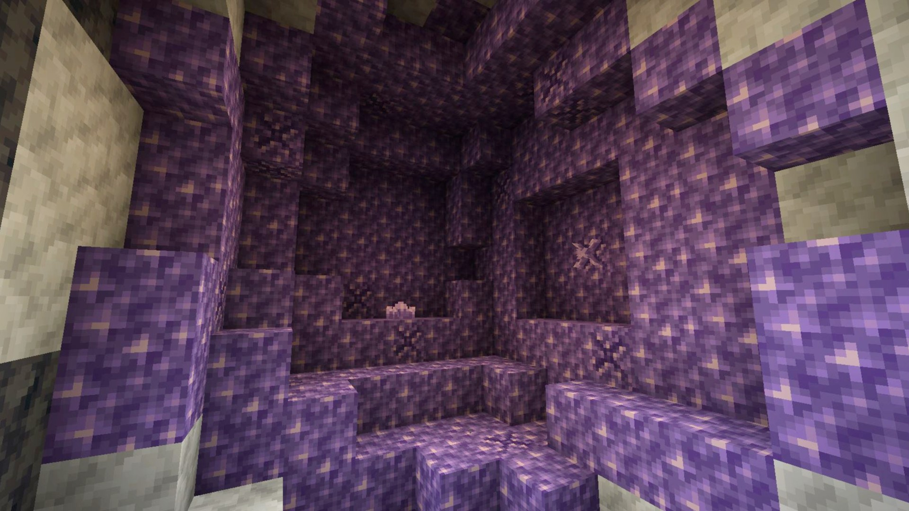
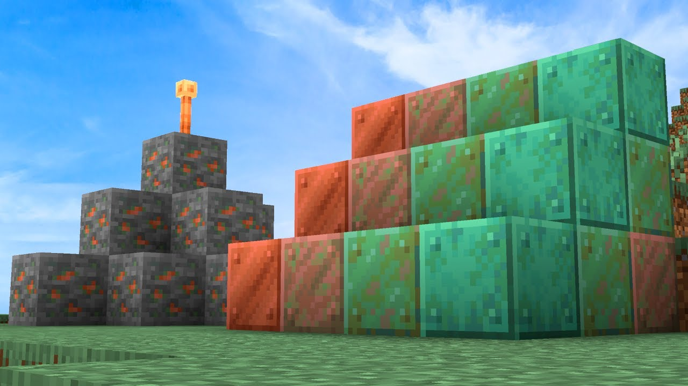
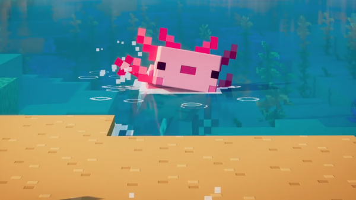
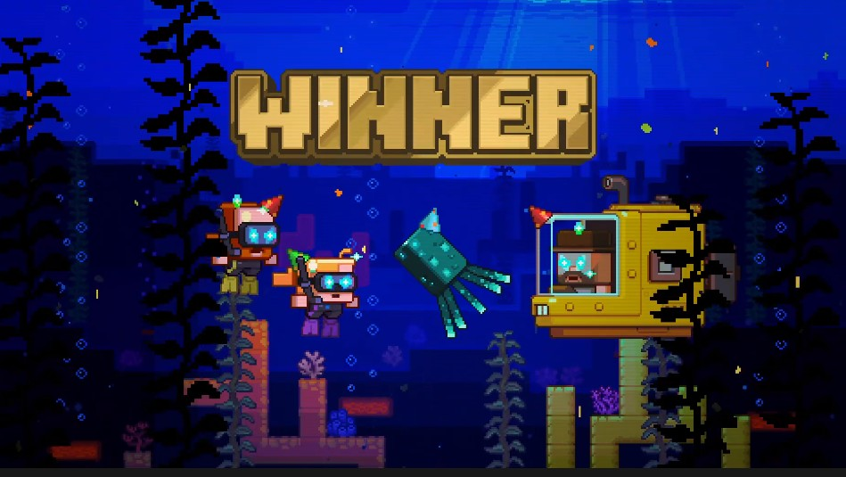
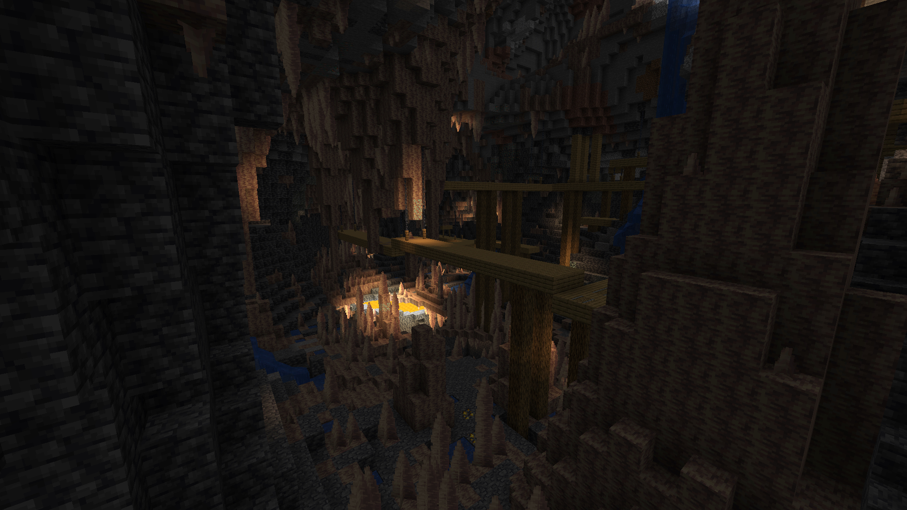
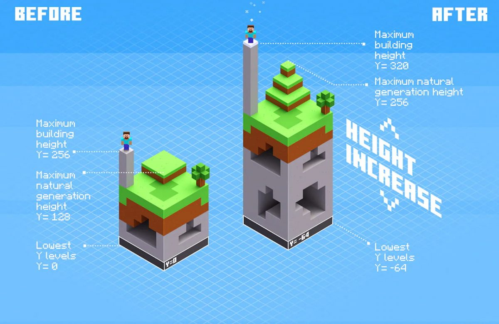

The 1.17 minecraft version entered the game on June 8, 2021
And 1.18 on November 30, 2021
The update introduces a lot of content to the game, including:
Lush Caves
Venture into the enchanting underground world of Lush Caves, where vibrant azalea trees, swaying blooms, and hanging roots create a mesmerizing atmosphere. Explore moss-covered stone pillars, discover juicy berry bushes, and bask in the ethereal glow of sunlight filtering through the cave's crevices. It's a tranquil sanctuary where you can find hidden treasures, unleash your creativity, and be captivated by the natural beauty of this subterranean biome. Immerse yourself in the wonders of Lush Caves and let your imagination thrive in this underground paradise.

Dripstone Caves
Descend into the breathtaking depths of the Dripstone Caves, a subterranean realm adorned with awe-inspiring stalactites and stalagmites. Journey through winding tunnels and marvel at the magnificent formations that hang from the cave ceilings and rise from the cave floors. Beware of the pointed dangers that lie in wait, as these sharp structures can inflict damage upon the unwary. Explore the mysterious beauty of the Dripstone Caves, where every step unveils a mesmerizing world of natural wonders and tests your skill in navigating its perilous terrain. Delve into this subterranean marvel and uncover the secrets hidden within its mesmerizing formations.

Amethyst and Geodes
Discover the enchanting allure of amethyst, a gemstone of mystical beauty found within Amethyst Geodes. Journey deep into the earth to encounter these stunning geodes, where walls are adorned with vibrant clusters of purple amethyst crystals. Gaze in wonder at the sparkling formations, their ethereal glow captivating all who behold them. Collect shards of amethyst and craft them into decorative blocks, infusing your creations with a touch of enchantment. Immerse yourself in the captivating world of amethyst and let its radiant splendor inspire your imagination in the realm of Minecraft.

Copper Ore
Introducing copper, a versatile metal that adds a touch of rustic elegance to your Minecraft creations. Delve into the depths and mine copper ore to obtain this valuable resource. Over time, copper develops a unique patina, giving it a distinct greenish hue that adds character to your builds. Craft decorative blocks, stairs, and slabs to bring warmth and vintage charm to your structures. Create intricate detailing, accents, and architectural elements that showcase the beauty of this timeless metal. Let copper inspire your creativity and infuse your world with its rich and captivating presence.

Axolotl mob
Dive into the depths of Minecraft's aquatic realms and encounter the adorable Axolotls. These small amphibious creatures can be found in underwater caverns and ponds, bringing a playful and friendly presence to your underwater adventures. Tame these lovable companions and enlist their help in battling underwater mobs. Axolotls are skilled fighters, and their regenerative abilities make them valuable allies. With their vibrant colors and endearing nature, these aquatic creatures add a delightful charm to your underwater explorations. Discover the joy of befriending Axolotls and let them accompany you on your aquatic quests in the world of Minecraft.

Glow Squid voting mob
Illuminating the ocean depths, the Glow Squid emerges as the victorious mob from the Minecraft community's vote. Encounter this mesmerizing creature, a radiant variant of the squid species, as it gracefully glides through the dark waters. Witness its ethereal luminescence, casting a soft glow and transforming the underwater landscape into a magical spectacle. Marvel at its captivating beauty and let the Glow Squid inspire your imagination as you embark on underwater adventures. Whether you seek to admire its radiant glow or incorporate its essence into your creations, the Glow Squid adds a touch of enchantment to the depths of Minecraft.

Cave Generation
Prepare for an entirely revamped cave generation system that breathes new life into Minecraft's underground exploration. Descend into the depths and witness the awe-inspiring diversity and intricate formations that now await you. Explore vast networks of caves, from sprawling chambers to narrow tunnels, each with its own unique features and surprises. Marvel at the grandeur of colossal caverns and navigate through treacherous ravines carved by the forces of nature. The updated cave generation system introduces a heightened sense of adventure, as you uncover hidden treasures, encounter challenging obstacles, and immerse yourself in the vast subterranean landscapes of Minecraft like never before. Get ready to embark on unforgettable spelunking journeys and uncover the mysteries that lie beneath the surface.

Height Variation
Experience a new level of realism and visual splendor in Minecraft with the introduction of height variation. Prepare to be captivated by the breathtaking landscapes that now boast towering mountains, rolling hills, and deep valleys. Every step you take brings you face to face with a world that feels alive, with elevations that mirror the diversity of our own planet. Scale majestic peaks to witness stunning vistas, traverse gentle slopes that lead to lush valleys, and navigate through rugged terrain that challenges your survival skills. The expanded height variation system adds depth and immersion to your Minecraft adventures, offering endless possibilities for exploration, settlement, and awe-inspiring architectural projects. Brace yourself for a journey that takes you to new heights and plunges you into the depths, as you navigate a world shaped by the forces of nature in all its grandeur.
